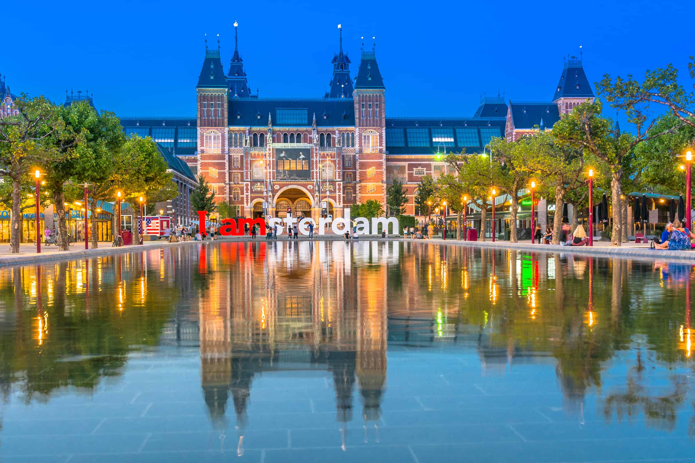
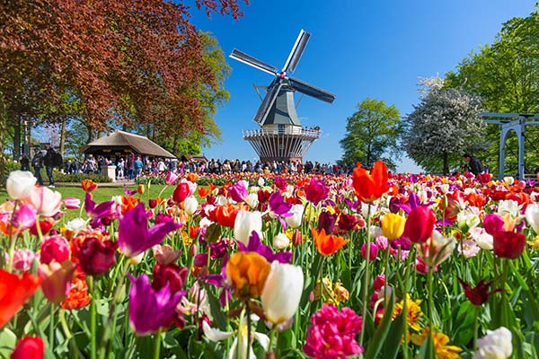

Vijf Feiten Over Amsterdam
1) Amsterdam heeft meer fietsen dan mensen
Amsterdam heeft van oudsher de reputatie een fietsvriendelijke stad te zijn, dus is het niet verwonderlijk dat je de hele dag door verwoed bellen hoort rinkelen van fietsers. Meer dan 60% van de inwoners fietst elke dag, en er zijn ongeveer 3 fietsen voor elke auto op de weg.
2) Tabak is verboden in cafés en restaurants
Cannabis joints mogen dan legaal zijn in Amsterdam, maar het roken van tabak is sinds 2008 verboden in cafés en restaurants. Je mag ook niet roken in de treinen, stations en wachtruimtes. Als je door de autoriteiten betrapt wordt, kun je rekenen op een boete van €25 of meer.
3) De eerste hoofdstad ter wereld die het homohuwelijk legaliseert
Ongetwijfeld een van de meest liberale steden van Europa, was Amsterdam (en de rest van Nederland) de eerste die het homohuwelijk legaliseerde, in 2001. Sindsdien is de stad een favoriete toeristische bestemming van de LGBT gemeenschap. De jaarlijkse Amsterdam Gay Pride brengt dansfeesten, filmvertoningen, sportevenementen, debatten, en de wereldberoemde Canal Parade.
4) Amsterdam heeft meer dan 2.500 woonboten
Er zijn meer dan 2.500 woonboten in Amsterdam, waarvan je er vele kunt overnachten in plaats van in een doorsnee hotel. Deze drijvende woningen liggen langs de grachten en de Amstel, zijn gebouwd op een betonnen ponton en hebben alle kenmerken van een gewoon huis, zoals badkamers, keukens en slaapkamers.
5) Amsterdam wordt gedragen door miljoenen palen
De meeste gebouwen in Amsterdam zijn gebouwd op houten palen die tussen de 15 en 20 meter lang zijn. Een doorsnee huis in het centrum van de stad wordt ondersteund door ongeveer 10 palen, maar het Koninklijk Paleis van Amsterdam staat op meer dan 13.500 houten palen.
Toeristische Attracties
Rijksmuseum Amsterdam

Het Rijksmuseum in Amsterdam is de meest bezochte bezienswaardigheid van Amsterdam. Met meer dan 5000 schilderijen vertelt dit museum 800 jaar geschiedenis, waaronder de 17e eeuw, de Gouden Eeuw in Nederland. Het Rijksmuseum bevat wereldberoemde schilderijen als de ‘Nachtwacht’ van Rembrandt van Rijn, het ‘Melkmeisje’ van Johannes Vermeer en werken van Frans Hals.
Behalve de vele schilderijen bevat het museum ook een grote collectie scheepsmodellen, wapens, vlaggen, gouden en zilveren voorwerpen en kostuums. In het nationale museum krijgt u een blik in de rijke geschiedenis van Nederland.
De Keukenhof

De Keukenhof is een bloemenpark van 32 hectare, gelegen in Lisse in Zuid-Holland. De Keukenhof trok het afgelopen jaar 1,4 miljoen bezoekers tijdens de twee maanden dat de bloembollen in bloei staan (dit jaar van 23 maart 2023 t/m 14 mei 2023). De Keukenhof is dan ook een van de belangrijkste toeristische attracties in Nederland geworden en met onze tips helpen wij u graag uw bezoek soepel te laten verlopen.
De naam Keukenhof is afgeleid van het kasteel Keukenhof dat zich op dit landgoed bevindt en waarvan de toenmalige kasteeltuinen nog steeds de basis vormen voor de Keukenhof. In 1950 werd bedacht een tentoonstelling te houden om de Nederlandse bloembollen meer onder de aandacht te brengen. Tegenwoordig uitgegroeid tot een bloemenshow met meer dan 7 miljoen bloeiende voorjaarsbloemen zoals krokussen, narcissen, hyacinten, lelies en 800 verschillende soorten tulpen. Bent u in de lente in Holland? Dan mag u de kleurrijke Keukenhof zeker niet missen!